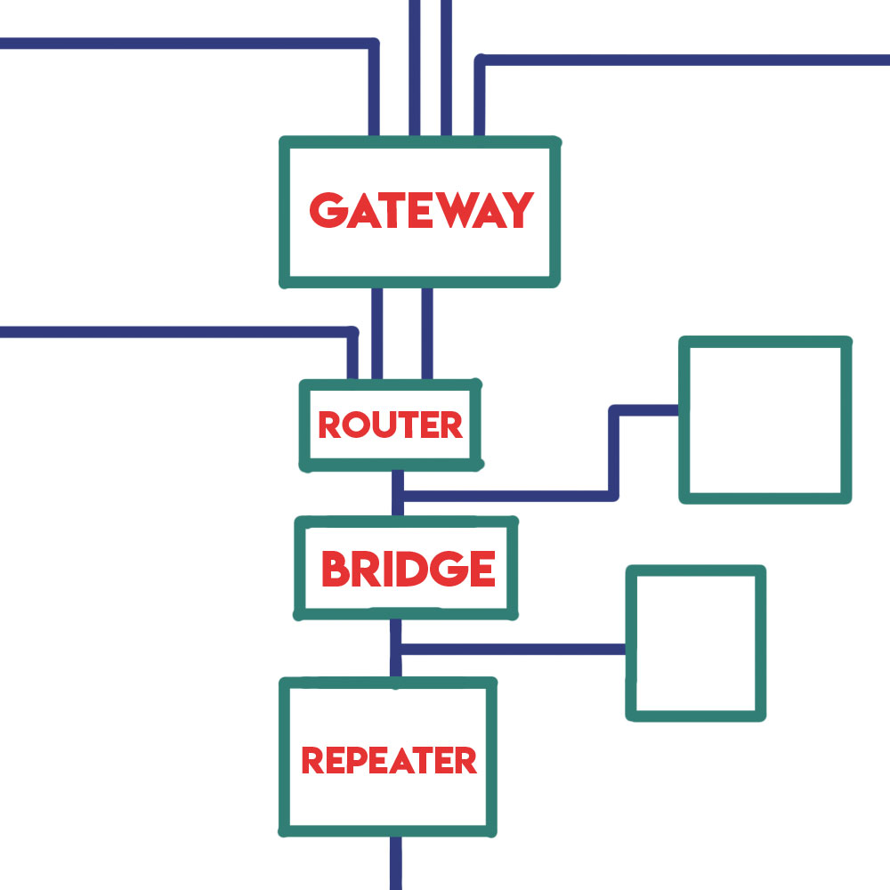

Networking Hardware
By: Josh Cronk
 %copy; Josh Cronk
Intro to Networking Hardware
Networking hardware is the physical objects that connect you to the internet. They take your signal and send it to servers that direct it to the desired location. They collect data from websites and send it back to you so you can access the selected website. Routers, servers, and various other hardware all work together to connect one computer to another.
Hardware at a Campus or Large Space
When connecting to the internet at a campus or something of the like, there is a gateway which connects net segments and will convert protocols allowing other networks to talk with the internet. From there the signal goes to a router which actively directs internet traffic to the next station. Then it goes to a bridge where it keeps local traffic and passes non-local traffic. It could also go to a repeater which echos or amplifies signals between two pieces of a local network.
Hardware at Home
First you have the wireless router, which is the hub where all of the computers and devices connect to. They are technically gateways, not routers, but they are called routers anyways. From there if you have a wireless NIC (network information card), you can connect to the internet. Laptops come with these but desktops do not have one installed. Alternatively, you can connect via ethernet cord which directly connects your computer and the router, connecting you to the internet. Now your computer and the servers can communicate.
Servers
A server is a computer, a device, or a program that is dedicated to managing network resources. They are usually called dedicated because they don't do anything other than their server tasks. Servers accept and responds to requests made by another program, known as a client. They allow you to send texts, access websites, play games with your friends, etc. most servers are never turned off meaning that when a server goes down, it can cause companies and individuals trouble.